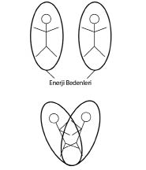

BOMBELİ KALP ŞEKLİNİN SIRRI
İnsan kalbi fizyolojik olarak, iki bombeli kalp şekillerine hiç benzemediği halde bu sevimli ve ilginç şekle neden “kalp” dendiğini biliyor musun?
Bir rivayete göre iki bombeli kalp şekli, sevgililerin enerji bedenlerinin resmedilmesiyle ortaya çıkmış ve evrenselleşmiştir.

Unutma:
“Gerçek aşk; tek bedende çift kalp atımı duymaktır...”
Kalpler, eski zamanlarda “pembe” renkte çizilip boyanırken günümüzdeki kalplerin kıpkırmızı boyanmasının sebebi tabii ki renklerin modasıyla ilgili değil.
“Pembe”yle boyanan kalpler koşulsuz sevginin ilişkilerini şifalandırırken, topraklanmanın rengi olan kırmızı, ilişkileri dünyevileştirmektedir.
Günümüzde ilişkilerin maddi boyutlar temelinde şekillenmesi, birlikteliklerde yaşanan duygusal krizlerin ve hayal kırıklığının sebebidir.
Arabası varsa, maddi durumu iyiyse, eğitimliyse, sosyal çevresi sağlamsa, düzgün giyiniyorsa, boyu uzunsa, fiziği düzgünse kriterleriyle başlayan ilişkiler, gerçek sevgi ilişkileri olmadığından bu saydığım faktörlerden birinin eksilmesi halinde yaşanan beraberliğin gemisi su almaya başlayacaktır ve eksilen her kriter ilişkinin batıp boğulmasına neden olacaktır.
Biliyorum sen de fahişelere zaman zaman çok kızıyorsun. Para karşılığı bedenlerini, kendilerine olan saygılarını ve değerlerini başkalarına sunuyor olmalarından rahatsızlık duyuyor olabilirsin. Oysa, bu türden bir ticareti daha kapalı boyutlarda gerçekleştiren o kadar çok insan var ki, eminim etrafına dikkatli bakarsan sen de göreceksindir.
Maddi sıkıntı çekmemek için nikâh masasına oturan, kariyeri için ilişki yaşayan, şartları kendi düzenine uygun olduğu için beraberliği kabul eden, yalnız kalmamak için ilişkide olan pek çok insan, yaşadığı şeyi “gerçek” sanıyor ve sanrıları bir gün sona erdiğindeyse aslında olmayan bir şey için acı duymaya başlıyor.
Unutma:
Aşkı koşullar değil, sen yaratırsın!
– Metin biz aşkı neden hep başkalarında yaşamak istiyoruz?
– Dışa odaklı bir toplum olduğumuz için. İçimizi öfkeyle, kederle, sigara dumanıyla ve zehirle doldururken; saçlarımıza, kıyafetimize ve tenimize özen ve hassasiyet gösterişimiz de bu huyumuzu kanıtlıyor zaten. Sen içsel bir gerçeğe değil, dışsal bir yanılsamaya yatırım yapıyorsun.
Babamın bir arkadaşı vardı ve benim Avustralya’da yaşayan eski kız arkadaşımla ilişkimi her fırsatta eleştirirdi. Kendisini aşkın kadim doktoru gibi gören bu sevgili amca, benim üç buçuk yıldır birlikte olduğum kız arkadaşımla aramızdaki uzak mesafeleri gözünde büyütüp bana sürekli “Senden çok uzakta genç ve güzel bir kızın etrafındaki onca insana rağmen sana âşık kalması zor. Sen de burada yalnızsın ve çevrende sayısız güzel kız var. İlişkinizin yürümesi imkânsız çünkü sizin koşullarınız uygun değil” derdi.
Ona sadece şu cevabı verdim:
Bir akvaryumun içine iki balık koyarsan, onlar birbirleriyle sevgili olmak zorunda kalırlar. Orada artık bir seçim yoktur, kader vardır... Fakat koca okyanusun içinde iki balık birbirlerini seçerlerse, işte onun ismi AŞK olur... Çünkü bu balıkların arasında zorunluluklar ya da şartların yarattığı bir mecburiyet yoktur.
Şunu artık anlaman gerekiyor:
Gerçek aşkı, koşullar bunu gerektirdiği için yaşamazsın,
onu sen kendin yaratırsın.
İlişkiler konusuyla ilgili karşıma çıkan ve en unutamadığım deneyimlerden biri de “Âşık mısınız?” diye sorduğum bir kadının uzun süre düşündükten sonra “O bana âşık...” diyerek cevap vermesidir.
Kadın önceki beraberliğinde büyük bir bağımlılık yaşamış ve bunun adına da “aşk” demişti. Yediği büyük darbelerden sonra bir daha gözü korkmuş ve artık duygularını kapatarak adı aşk olmayan başka bir ilişki modeli düşlemişti. Sonunda kendine göre koşulların daha iyi olduğu bir adam bulmuş, kendisini de onu sevdiğine ikna etmişti. Şimdi de neden mutsuz olduğunu merak edip benden seans almak istiyordu.
Kadın önceki ilişkisinden dolayı, yeniden kırılmaktan ve darbe almaktan o kadar çok korkuyordu ki gerçek bir aşk deneyimlemek yerine tamamen güven çemberi içerisinde, şartları daha uygun bir insan arayıp bulmuştu.
Gönül ilişkilerinde uygunluk aranmaz! Karşılıklı şartlar ve yaptırımlar belirlemezsin. “Uygunluk” durumu ancak satın almayı düşündüğün araba için söz konusu olabilir.
Benim kız arkadaşım bana hiç uygun değildir ama ben ona çok âşığım...
“Aşka inanırım” dediğin gün, aşkı unuttuğun gündür.
Balığın denize inanması kadar aptalca bir şey yoktur.
– Benim aşktan hep canım yandı! Tekrar yaralanmaktan çok korkuyorum! Aşk acısı kötü bir his değil mi?
– Bugün beşeri aşkın acısını çekenler; yarın ilahi aşkın hamalı olurlar.
EL ÇIRPMANIN KALPLE İLİŞKİSİ
Alkışlamak ya da diğer bir deyişle el çırpmak, sevgiyle ve kalp ilişkisiyle ilintili bir harekettir.
Alkışlama işlemini kafanın üzerinden, karnının hizasında ya da yüzüne yakın mesafeden yapabilecekken; ellerini tam da kalp çakranın üzerinde çırpmak özel bir anlam taşır.
Ellerini kalp çakranın üzerinde çırparak, karşı tarafa duyduğun sevgiyi ona çıkardığın sesle birlikte iletirsin.
Sahne insanlarının uyuşturucu gibi tutkuyla arzuladıkları bu alkış sesi, bazen yaptıkları bu işten bekledikleri tek şeydir. Tiyatro oyuncuları ya da müzisyenler çok zaman para, kariyer ya da şöhret için değil, binlerce insanın kalbinin üzerinde patlayan ellerinden aldığı büyük sevgiyle muhatap olabilmek için o sahneye uzun yıllar ve emek harcarlar.
Doğum gününde ya da mezuniyet töreninde aldığın sevgi dolu alkışların sana kendini nasıl hissettirdiğini hatırla lütfen. “Alkış”; sesli, güçlü ve kalabalık bir sevgi ifadesidir.
“Sevgi”nin milyonlarca ifade biçimi olmasına rağmen fiziksel ve duygusal şiddet asla bu yollardan biri değildir. Sevdiği için şiddet göstermek ya da sevildiği için kıskanıldığını düşünmek, büyük bir yalanın içinde başrol oynamaktır. Hayatının en acıklı ve en yalan filminde, aldatmacanın ve illüzyonun içindesindir.
Şehir dışında seminere gittiğimde arkadaş grubum içinde yer alan bir kız, sevgilisinin kendisini sürekli dövdüğünü, ancak bunu çok sevdiği ve kıskandığı için yaptığını, yaşadığı bu sevgisizliğin gayet gerçek ve güzel olduğunu anlatıp duruyordu.
“Şiddet” konusunda son derece katı ve tavizsiz bir adam olarak, şartlar ne olursa olsun bireye uygulanan her türlü şiddetin, ne özrünün ne de affının olmaması gerektiğini düşünüyorum.
Kadın eğer ilişkisi içinde dayak yiyip bunun da sevgi olduğu yanılsamasından romantizm çıkarıyor ve bu türden sevgisiz bir ilişkiyi kabulleniyorsa, maalesef yaşanacak çok daha büyük sorunlara karşı hazırlıklı olmak zorunda kalır.
Çiftlerin en fazla kullandığı savunma “Ben sana güveniyorum ama etrafa güvenmiyorum” cümlesi aslında “Ben kendime güvenmiyorum” demektir. Bu ruhlar korkuyla dolmuş, karanlıktaki ruhlardır.
Kadınlar dayak ve hakarete maruz kalıp bunun devamına izin vererek aslında yaşadıkları ilişkiyi daha da çıkmaza sokup bozarlar.
Yediği dayaklardan hoşnut olduğunu anlatan bu kıza, yaşadığı şeyin “sevgi” olmadığını anlattığımdaysa artık beni dinlemiyordu.
İnsan güvensiz hissediyorsa ortada sevgi yoktur.
İlişkide sadece sahip olduğunu karşındakine sunabilirsin.
Korkuysan korkuyu, sevgiysen aşkı...
Mutsuzlaştıkça, kurduğun ilişkilerin “sevgi” olamayacağını çünkü artık o dili bile konuşmayı unuttuğunu ve bu derin körlüğün içinde sevgiyi hissetmenin mümkün olamayacağını anlatmaya çalışıyorum sana.
Senin radyonun frekans skalası 100’e kadarsa, dinleyebileceğin radyo kanalları, 100 ve altındaki frekanslardır. Yani sen eksik, mutsuz, problemli, blokajlı ve travmalarla dolu bir bireyken büyük ve gerçek sevgiler yaratıp paylaşman imkânsızdır.
Beta beyin dalgasında, tamamen korkuda yaşayan bir zihin yapısındayken şahane aşklar deneyimlenemezsin. Bugün o çok sevdiğin dünyaca ünlü efsane masal âşıklarının, birbirlerin uğruna ölümü göze alan o meşhur sevgililer aslında korku ilişkilerinin kahramanlarıdırlar.
Ebeveynlerin de genel olarak çocuklarıyla ilgili kurduğu ilişkiler korku ilişkileridir. Örneğin; çocuğun caddede araç yoluna doğru koşmaya başladığında ve sen bunu fark edip onu yakalayarak kaptığın gibi kaldırıma geri çektiğinde, tam bir sevgi ilişkisi içindesindir. Burada gerçek bir tehlike ve gerçek bir kurtarma tepkisi söz konusudur.
Verdiğim bu örneğe karşılık; eğer olmayan sanrı senaryolar üreterek, yaşanmamış bir olaya tepki veriyorsan işte o noktada da şizofrenidesin demektir. “Çocuğum gece dışarı çıktığında ya ona saldırıp tecavüz ederlerse, ya döverlerse, ya soyulursa, ya bir kazaya kurban giderse, ya sarhoş olup köprüden düşerse” kaygıları, “sevgi”den dolayı değildir. Yaşanmamış, gerçek olmayan bir sanrıdan dolayı reaksiyon üretmek, çocuğun özgürlük alanlarını daraltmak, ona farkındalık yerine korku yüklemek ve güvensizlik aşılamak çocuğa zarar vermektir.
İlişkilerle ilgili sık karşılaştığım sorunlardan biri de başkalarının sıkıntılı ilişkilerinin nasıl dengelenip iyileştirebileceğidir. Bu konuda belki sen de hayal kırıklığına uğrayacaksın ama açıkça belirtmek zorundayım ki, yeryüzünde kendin dışında değiştirebileceğin hiçbir şey yok. İçinde kendinin yer almadığı hiçbir ilişkinin üzerine pembe “Ki” topları atarak başkalarının aşk kahramanı olamazsın.
Kendi tecrüben dışında başkalarının özgür iradeleriyle deneyimledikleri hiçbir ilişki şekline müdahale edemezsin, hatta etmemelisin! Başkalarının yolculuk tarzına müdahil olmak aslında tekâmüle karşı yapılan hadsizlikten başka bir şey değildir.
Önemli olan senin ne anlattığın değil, onun ne anladığıdır.
Doğru olan, onun kendi özgür iradesiyle anladıklarına
senin saygı duyman ve buna karşılık asla onun ne anladığına
müdahale etmemendir...
Varoluşa sonsuz inancın varsa ve onun kusursuz düzenine güveniyorsan, kendin dışında yaşanan her şeyin bir ahenge ait olduğunu bilir ve üzerine düşmeyen vazifelere bulaşmak hevesinde olmazsın.
Mesela çatışmalı ve sıkıntılı bir ilişki yaşayan babayla oğul arasında, arabuluculuk yapma çabasında olan annelerin bu girişkenliğinin adı iyilik-güzellik-hoşluk değildir. Belki fazla sert gelecek, ama bu müdahalenin adı “hadsizlik”tir. Çekişme içindeki baba ve oğul, yaşadıkları bu tecrübeyle birbirlerine mutlaka bir şeyler öğretiyorlardır ve bu deneyim her ikisi için de gelişimin bir parçası olabilir. Bu ilişkide baba otorite kurmaya çalışarak çocuğunu kontrol edemeyeceğini; çocuk ise doğruları ve özgürlükleri için emek vermeyi öğreniyor olabilir.
İki özgür iradenin seçimine ve tecrübesine müdahil olmak her ne kadar iyi niyetli gözükse de aslında yanlıştır ve varoluşun kusursuz sistemini aslında çok da kusursuz bulmadığının ifadesidir.
Sana doğruymuş gibi gelmediği ve hiç onaylamadığın halde bile, dışarıda yaşanan diğer durumların içinde de bir mükemmeliyet bulunduğundan emin olmalısın. Antilobun, kaplan tarafından avlanarak parçalanması, belki sana göre çok büyük bir vahşettir ancak doğanın sürekliliği ve dengesi açısından orada ahenk içinde işleyen bir sistem vardır. Kimsenin de bu düzene müdahil olup saygısızlık etme hakkı yoktur.
İlişkilerin dengelenmesinde farkındalık sahibi olmak, çözümsüz gibi görünen problemlerin bile, kolay çözüm yolları bulunduğunu açığa çıkaracaktır.
Bir defasında öğrencim kardeşiyle kavga ettiğini ve öfke anında kardeşine kötü sözler söyleyip onu çok kırdığını anlattı. Yaşanan durumdan hayli pişmandı ve kardeşiyle olan ilişkisinin düzelmesini istiyordu. Benden de bu sorun için hangi “Ki” topunu atması gerektiğini öğrenmeye çalışıyordu. Öğrencime, “Ki” topları yapmadan önce kardeşine gitmesini ve ondan samimiyetle özür dilemesini, yaşadı üzüntüyü ve pişmanlığı dürüstçe ifade etmesini söyledim. “İşte onu hiç yapamam Metin Bey, ben en iyisi “Ki” topu atıp göndereyim” dedi. Kalbini kırdığın insandan bile özür dileyemeyecek kadar sert egolar taşıyan kişilerin, hayat sahnesinde varoluşçuluk oynamaları tekâmül yolunda tek bir adım dahi ileri gidememelerine neden olacaktır. Öğrendiği bunca egzersize ve çalışmaya rağmen yeteneklerini uyandırması ve geliştirmesi kolay değildir. Öğrencime önce bu egodan çıkması gerektiğini hatırlatıp, kardeşinden özür dilemesini, ardından ona dilediği kadar pembe ve yeşil “Ki” topları gönderebileceğini böylece onu bedensel, zihinsel ve ruhsal olarak sevgiyle sarmalayabileceğini anlattım.
Kırık kalpleri sadece aşk harcıyla tamir edebilirsin.
Bu noktada şunu hatırlatmam gerektiğini düşünüyorum:
Ben burada sana, sende enerji olarak eksiklik yaşadığın alanları gösteriyorum. Genel olarak nerede hata yapıldığını ve bu hatalı noktaların iyileştirilmesi gerektiğini anlatıyorum. Sorunlu alanlarınla ilgili uyanma ve aydınlanma yaşaman gerektiğinden bahsediyorum. Lakin seni bütünleyecek olan insan ben değilim. Kendini bütüne adapte edecek olan kişi sadece sensin.
Örneğin insanların haklarını yemekten geri adım atmayan kötü niyetli kişiler hiçbir zaman yeşil “Ki” topu atarak hayatlarında zenginlik yaratamayacaklardır. Öğrendikleri bu egzersizler ve uygulamalar onların sanrı dünyasında sonuç göstermeyecektir.
Şunu unutma lütfen:
Hayat; ruhsal, zihinsel ve bedensel olarak yaptıklarının
bütün olarak oluşturduğu güçten ibarettir.
Yaşam enerjisi hakkında gece gündüz konuşan ancak kalbinde zerre kadar sevgi taşımayan insanlar, bu zihin yapısında kaldıkları sürece boş konuşmaya devam edeceklerdir çünkü deneyimledikleri hiçbir hakikat olmayacaktır. Kendi yolculuklarında yerlerinde saymaya devam ederken, başkalarının kat ettiği ruhsal ivmeler hakkında konuşup duracaklardır.
PEMBE “Kİ” TOPU EGZERSİZİ:
• Pembe bir “Ki” topu düşleyerek onu kalp çakrana yerleştirip sevgiyle dolu olmayı iste.
• İkinci pembe “Ki” topunu da hayal edip avuçlarında hissettikten sonra onunla bütün bedeninin sarmalandığını ve böylece sevgiyle kuşatıldığını hisset.
• Üçüncü pembe “Ki” topunu yaptıktan sonra kendinin de dahil olduğu ilişkilerini bu topun içine yerleştir. (Sevgilini, aileni, dostlarını, iş arkadaşlarını bu pembe topun içinde seninle birlikte hayal edebilir, onlarla ilişkini şifalandırabilirsin.)
• Son olarak yaptığın pembe “Ki” topunu, hayal ettiğin bir korkunun üzerine atabilirsin.
– Enerji çalışmaları yaparken, yüzük ya da kemer gibi aksesuvarları enerji akışını kesintiye uğratmamak için çıkarmam gerekiyor mu?
– Kullandığın kablosuz internet ağı bile metrelerce alana yayılarak duvarların içinden gelip geçebiliyorsa, varoluşun sevgi enerjisinin sana her yerden ve her koşulda ulaşabileceğinden emin ol. Bu yanılsamayı ilk kim çıkardı anlamıyorum. İnsan yapımı teknolojiler bile duvarlardan geçebilirken, varoluştan akan sevginin sen kemer, küpe ve yüzük takıyorsun diye sana ulaşamadığını düşünmek gerçekten delice. Sen çelik kasanın içinde bile olsan sevgi sana ulaşacaktır.
Bazı insanlar “Ama Metin bak ben kemer ya da yüzük olunca daha az enerji aktığını hissediyorum” der. İşte bu nedenle dogmalarından ve batıl inançlarından, dolayısıyla zihninin hapishanesinden kurtulmalısın. Zihninin sınırları, yaşamının sınırlarını belirler. İçsel yolculuğun birinci kuralı öğrendiklerini unutmaktır. Hakikat, sen öğrendiklerini unuttuğunda geriye kalandır. Bilmek tutsaklık, anlayış özgürlüktür.
BEDENDEKİ ENERJİ MERKEZLERİNİ AÇMA EGZERSİZLERİ “Kİ” TOPLARI NASIL RENKLENDİRİLİR?
“Ki” topunun iki tane ana çalışma prensibi vardır:
1) Renk: “Ki” toplarının renkleri önemlidir çünkü her çakranın doğal bir çalışma frekansı vardır. Frekanslarının renginde çalıştırıldığında etraflarındaki organları da düzgün beslerler. Kırmızı olan çakrayı, kendi voltajında yine kırmızı bir “Ki” topuyla çalıştırırsan, bu bölgeyi daha hızlı ve daha doğru dengelemiş olursun.
“Ki” topları, tıpkı onları avuçlarının içinde düşünerek var ettiğin gibi yine zihinde canlandırmak yoluyla renklenir. “Ki” topu yaparken, zihninde yeşili düşünmen ya da söylemen topu renklendirmek için yeterlidir. Elinde kırmızı ya da yeşil bir elma tuttuğunu düşünmek kadar basittir. Yalnızca hayal et! Hepsi bu...
Rengi düşündüğün an, onun görüntüsünü zaten bilinçaltına da düşürmüşsün demektir. Elindeki hayali topa hangi renge bürünmesi gerektiğini söylediğinde ya da zihninde canlandırdığında senden istediğim şeyi başarmış sayılırsın.
2) Niyet: Topu hangi blokajı çözmek ya da nereyi şifalandırmak için atacağını ona söylemelisin.
“Kİ” TOPU EGZERSİZLERİ:
Kırmızı “Ki” topu kullanımı (iki bacak arası): Egzersize, niyet ve renk oluşturarak hemen başlayabilirsin! Önce elinde kırmızı bir “Ki” topu tuttuğunu hayal et ve ona “Kök çakramı dengele... Beni toprakla” dedikten sonra topu iki bacağının arasına yerleştir.
Turuncu “Ki” topu kullanımı (göbek deliğinin iki parmak altı): Ellerinin içinde portakal gibi turuncu bir “Ki” topu hayal et ve ondan yaratıcılığını artırmasını, cinsel çakranı dengeleyerek şifalandırmasını iste. Artık turuncu “Ki” topunu göbek deliğinin iki parmak altındaki cinsel çakra bölgene bırakabilirsin.
Sarı “Ki” topu kullanımı (göbek deliğinin beş parmak yukarısı): Bu kez avuçlarında sapsarı bir “Ki” topu düşün ve onu mide çakrana yerleştirerek, yaşadıklarını ve yediklerini hazmetme becerini güçlendirmesini iste. Bu bölgede “Depresyonumu, panik atak ve mide problemimi şifalandır” da diyebilirsin.
Yeşil “Ki” topu kullanımı (kalbin hizasında tam ortada iman tahtasının üzerinde):
• Elinde yeşil bir “Ki” topu tuttuğunu hayal edip ona kalp çakranı şifalandırmasını ve dengelemesini söyledikten sonra topunu, göğüskafesinin tam ortasına yerleştir.
• Yeşil “Ki” topu yapıp onu da bedeninde rahatsızlık ya da hassasiyet duyduğun bir bölgene, orayı şifalandırması için koy.
• Yeşil “Ki” topunu büyüterek bütün bedenini sardığını hayal et. Yeşil bir yumurtanın içerisindeymiş gibi kendini yeşil “Ki” topunun ortasında hissedip şifalanmayı iste. Seni sarmalayan bu topa, henüz ortaya çıkmamış hastalıklarını şifalandırmasını söyle.
• Yeşil “Ki” topu daha yap ve bunu da sevdiğin kişilere ya da onların hastalıklarının üzerine, şifalanmalarını isteyerek at. Sevdiğin insanları düşünmen ya da onları zihninde canlandırman, yeşil “Ki” topunun adresini belirleyebilmesi için fazlasıyla yeterlidir.
• Yeni bir yeşil “Ki” topu daha yaparak onu da dekorasyon aksesuvarı gibi evinin sevdiğin bir köşesine yerleştir ve topundan burada durduğu sürece şifalandırma görevi yapmasını iste. Yeşil “Ki” topunu dilersen çalışma masanın üzerine, sehpana, yatak odana ya da ayna önüne koyabilirsin.
• Yeşil bir “Ki” topu yap ve bunu da öyle büyüt ki bütün odanı, evini hatta oturduğun binayı dahi içine alsın ve kapsadığı her şeyi şifalandırsın.
• Dilersen bir yeşil “Ki” topu daha yapıp onu da gerçekleşmesinin mucize olduğunu düşündüğün bir blokajının üzerine at.
• Son yeşil “Ki” topunu da bozuk bir elektronik alet, gitmeyi istediğin konserin bileti, park yeri bulmak gibi ufak tefek blokajları çözmesi için kullanabilirsin.
Mavi “Ki” topu kullanımı (boğaz bölgesi): Ellerinin içinde hayal ettiğin mavi “Ki” topunu boğaz çakrana yerleştirerek, ifade yeteneğinin güçlenmesini iste.
Mor “Ki” topu kullanımı (alında, iki kaşın ortası): Mor bir “Ki” topu yaparak, ondan farkındalığını artırmasını isteyerek yavaşça alın çakranın üzerine koy.
Beyaz “Ki” topu kullanımı (tepe bölgesi): Beyaz bir “Ki” topu yaparak, varoluşla bağlantı noktası olan ve bebeklerde bıngıldak diye bildiğimiz bölgeye onu yerleştirip, yaratıcı güçle bağlantını sağlamasını iste.
Artık renklerini ve görevlerini öğrendiğin “Ki” toplarını dilediğin kadar çoğaltabilir ve sınırsız bir özgürlük içinde her yere, arzu ettiğin kadar atabilirsin. Ancak şunu unutma ki, niyetini ve rengini oluşturup görevlendirdiğin hiçbir topu başkasının özgür iradesini yönetmek amacıyla kullanamazsın. Çocuğunun ders çalışması için, eşinin eve geri dönmesi için, arkadaşlarının sana karşı tutumlarını değiştirmek için kullanamayacağın bu enerji topları tamamen kişiye özeldir ve sadece sana ya da senin iradene hizmet eder. Bunlarla başka özgür ruhları ve iradeleri kontrolün altına alman mümkün değil.
ENERJİYLE YAPABİLECEĞİN DOĞRU VE YANLIŞLAR
Enerjinin yönlendirilmesi çok önemli bir konudur. İyi anlaşılması ve doğru uygulanması adına bazı noktaların altını çizerek izah etmek istiyorum.
Şunu iyi bilmelisin ki bir işin içine ne kadar çok teknik, batıl inanç, dogma girerse ve ritüel girerse o iş kesinlikle daha değerli olmaz.
Enerji çalışması yaparken izin almak, kıyafet seçimi yapmak, aksesuvar kullanmak, ritüeller uygulamak, yeni teknikler geliştirip garip dogmalar üretmek seni sınırlayacak, gücünü ve yapabileceklerini baskılayarak kısıtlayacaktır.
Bu yüzden içinde çok ritüeli olan bilgiyi daha değerli sanma! Kim daha çok teknik veriyorsa o daha etkilidir diye düşünme. Zor olanın kıymetli olduğunu kimse söyleyemez.
İşin sırrı her zaman “basit”liktedir!
Albert Einstein’ın da dediği gibi “Eğer bir problemi basitçe çözemiyorsan, o problemi anlamamışsın demektir.”
Eğer bu anlayışı edinirsen, emin ol zihnindeki bütün teknikler, ritüeller ve dogmalar eriyip yok olacaktır.
Şimdi eski bildiklerini unutmaya hazır mısın?
O halde devam edelim:
“Enerji” ile ilgili çeliştiğinde ve kendi kendine birtakım sorular sormaya başladığında “enerji” kelimesinin hemen üstünü çiz ve yerine “sevgi” sözcüğünü yaz. Sorduğun bütün soruları da ona göre yanıtla. Dolayısıyla verdiğin bütün cevaplar doğru olacaktır.
- Uzağa enerji (sevgi) gönderebilir miyim?
- Sembol çizmeden enerji (sevgi) gönderebilir miyim?
- Negatif enerji (sevgi) gönderebilir miyim?
- Bacak bacak üstüne atarak enerji (sevgi) gönderebilir miyim?
- Enerji (sevgi) göndermek için izin almalı mıyım?
- Küpe veya kemer varsa eneri (sevgi) akışı engellenir mi?
- İstediğim saatte enerji (sevgi) gönderebilir miyim?
- Dokunmadan enerji (sevgi) verebilir miyim?
- Yoğun bakımdaki birine enerji (sevgi) gönderebilirim?
- “Ki” topları olmadan enerji (sevgi) verebilir miyim?
Gördüğün gibi enerjinin yerine “sevgi”yi koyduğunda kendi sorularını kendin yanıtlayabiliyorsun. Elbette dokunmadan da enerji (sevgi) yollayabilirsin... Tabii ki bacak bacak üstüne atarak ya da dilediğin kıyafeti ve aksesuvarı takarak enerji vermeye devam edebilirsin. İnsan yatarken de, otururken de, kolye-küpe taktığında da sevmeye devam edebilir Bunlar sevgiye engel teşkil edecek faktörler değillerdir.
Unutma:
“Enerji” senin doğru ya da yanlış kullanman gereken bir teknik değildir. O varoluşunun tam da kendisidir. Senin yapıtaşındır.
– Öğrendiğim bu enerji egzersizlerini hayatımın sonuna kadar mı uygulamam gerekiyor?
– Sana öğrettiğim tekniklerin hiçbiri seni sınırlamak için değil, sadece zihinsel, bedensel ve ruhsal disiplinini sağlamak içindir. Zamanla ustalaştıkça bu sınırları da aşacak ve koltuk değneklerinden kurtularak aşk yolculuğuna devam edeceksin. Mevlana, hayatının son yıllarında artık namaz kılmıyordu çünkü kalbinin her atışı ibadet, her söylediği dua ve her hissettiği şey aşk olan bir insanın hiçbir ritüele ihtiyacı kalmamıştır.
UYARI: Sufi nefeslerini istikrarla yapmadan; “Ki” toplarıyla ilgili çalışmak hayatına yıkım getirebilir.
Var olan bu teknikler; senin uyanışın için adım adım ve büyük bir titizlikle inşa edilmiştir. Bu nedenle aranızdan bazıları daha pasif olan egzersizleri atlayıp ona göre daha aktif olan egzersizleri yapma eğiliminde olacaktır muhtemelen...
Sufi nefesi egzersizlerine istikrarla çalışıp zihnini öfkeden arındırmaya başlamadan önce yaratıcı hiçbir güce sahip olamazsın. Öğrettiğim teknikler, eğer temelinde sevgi dolu bir gönül yoksa işe yaramayacaktır. Eğitmenlik hayatım boyunca bunun örneğini defalarca kez gördüm.
Beta beyin dalgasındaki bir insan “yaratan” olamaz.
Bu beyin dalgası saldırıya uğradığın beyin dalgasıdır.
Yani kurban bilinci...
Kurban bilincindeyken yaratıcı güç, seni terk etmiştir.
Aslında bu âlem seni korumak için böyle inşa edilmiştir. Eğer bu bilinçte yaratıcı güç seninle olsaydı her korktuğunda ölürdün. Genelde bu beyin dalgasındaki insanlar, “yaratmak” yerine, kontrol etmek ihtiyacı duyarlar.
Bu etkinlik onlarda sanal bir güç gösterisi olarak kullanılmaya başlayacağından belki ilk başlarda her şey doğru çalışıyormuş gibi görünebilir. Fakat bir süre sonra bu insanların yaydıkları enerjiyle hayatları giderek daha da çekilmez bir hal alacaktır. Böylece daha da kontrolcü olup daha fazla müdahaleci olacaklardır. Yaşadıkları kısırdöngü onlara sadece mutsuzluk verecektir. Sonra “Ki” topları işe yaramıyor diyerek kendileri dışında başka bir suçlu aramaya bile kalkabilirler.